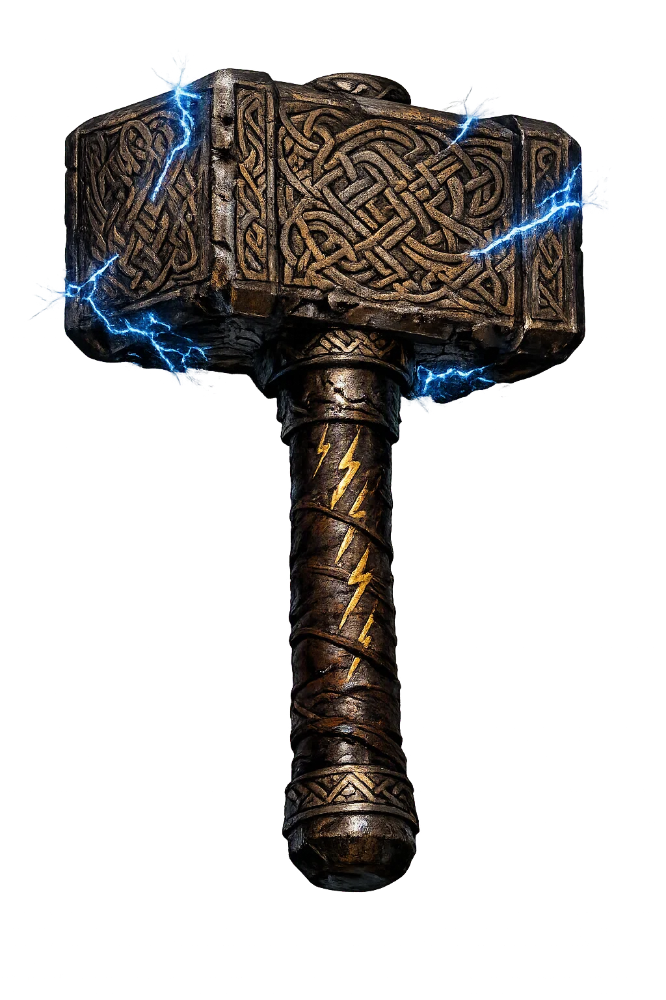
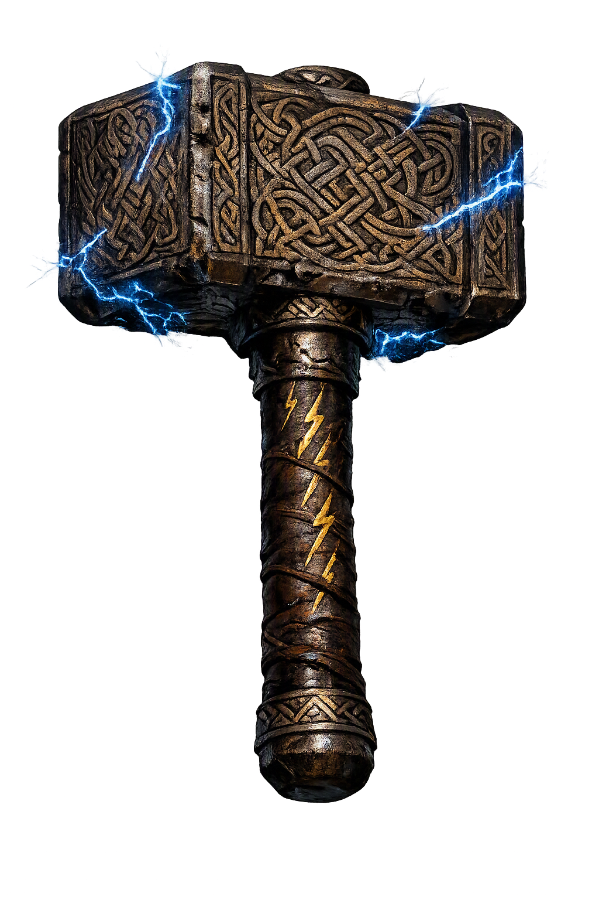

Stories of Mjǫllnir
Mjǫllnir is the most famous weapon in the northern world and the busiest: no other treasure of the gods both kills and consecrates. Forged as the stake in one of Loki's wagers, it came out of Sindri's forge with a haft too short — and the gods judged it the best of all treasures anyway. The sources hand it four great stories: its flawed making, its theft, its duel, and its blessing of the dead god's pyre.
After Loki shears Sif's hair, he must replace it, and from the sons of Ívaldi he commissions hair of living gold, the ship Skíðblaðnir, and the spear Gungnir. Swaggering, he wagers his head with the dwarf Brokkr that Brokkr's brother Sindri cannot make three finer treasures. At the forge, Loki becomes a fly and bites Brokkr at the bellows — arm, then neck, and Brokkr does not falter; but the third bite lands on his eyelid, and blinded by his own blood for one stroke of the bellows, he mars the work. Out of the forge comes a hammer — with a haft too short (Skáldskaparmál, trans. Brodeur).
Brokkr names its virtues to Óðinn, Þórr, and Freyr: swung, it never fails; thrown, it never misses; it returns to the hand of its own will; and it shrinks small enough to be kept inside the shirt. Only the short haft is held against it — and the gods judge it the best of all six treasures, 'for with it Þórr can defend us against the mountain-giants.' Loki, defeated by the very sabotage he taught, keeps his head only by a trick. The myth means the flaw in the gods' most trusted tool is the permanent signature of the adversary's interference.
Þórr wakes one morning and the hammer is gone. Loki borrows Freyja's falcon-shape, flies to Jötunheimr, and hears Þrymr boast that he has buried Mjǫllnir eight leagues down — and that no one recovers it unless Freyja is brought to him as bride. Freyja's refusal shakes her hall and snaps the necklace Brísingamen, so Heimdallr proposes the unthinkable: dress Þórr as the bride. The thunder-god protests — until Loki answers that without the hammer the giants will soon hold Ásgarðr. Veiled, hung with Brísingamen and jingling keys, Þórr rides east with Loki as his maidservant (Þrymskviða).
The comedy is exact: the 'bride' devours an ox and eight salmon and drains three casks of mead, while Loki explains to the startled groom that Freyja has eaten nothing and slept not at all for longing. Þrymr lifts the veil for a kiss and leaps the hall's length from the fire in her eyes. Then he calls for the hammer — to hallow the bride, laid on her knees by the hand of Vár — and Þórr's heart laughs in his breast. His hand closes on the haft; he kills Þrymr, then the giant's whole household. The joke has a hard core: the hammer laid in the bride's lap is not a stage prop but the consecration itself — and the mightiest of the Æsir must wear bridal linen to recover his own.
The hammer's most dangerous duel came against the giant Hrungnir, who boasted in Asgard itself that he would kill all the gods, carry Freyja and Sif off to Jötunheimr, and drain the Æsir's ale. The gods sent for Þórr, and at the ford of Grjótúnagarðar the giant waited behind his stone shield, hurling his whetstone weapon. Mjǫllnir and the whetstone met in mid-air: the hammer smashed the stone and drove on into Hrungnir's skull — but a shard of whetstone lodged in Þórr's own head. The god walked home with the fragment still in him, and the sorceress Gróa was summoned to sing it loose. Her spells worked; Þórr felt it stir, and in his joy told her that her long-lost husband was on his way home — Gróa forgot her charms mid-verse in her delight, and the whetstone stayed in Þórr's skull forever. Snorri adds the custom: whetstones are forbidden as grave-goods, for this reason. The myth means the hammer's victories are never clean — its greatest triumph left its bearer permanently scarred, and the one thing Mjǫllnir could not fix was the wound it won by.
When Baldr lies dead, the gods build his pyre on the ship Hringhorni, and the giantess Hyrrokkin, riding a wolf with vipers for reins, must be fetched to launch it. Baldr's wife Nanna dies of grief and is laid beside him. Þórr steps forward and hallows the pyre with Mjǫllnir — the god of thunder blessing the burning of the best of the gods — and when a dwarf named Litr runs across his path, he kicks him into the flames (Gylfaginning). The same gesture revives his slaughtered goats after they have been eaten, hallows the bride at the wedding feast, and here blesses the grave. Hammer at the cradle, hammer at the marriage-bed, hammer at the pyre: Snorri's picture of Þórr is of a god whose weapon marks every threshold of life — destruction and consecration in one motion, never separated. The Viking-age custom of wearing the hammer at the throat simply hung that threshold-power around the neck.
The domain of Mjǫllnir
In the norse tradition, Mjǫllnir is the hammer of Þórr — the one treasure the gods cannot do without. Dwarf-forged and short in the haft from Loki's sabotage, it never misses its mark, never flies so far that it fails to return to the thrower's hand, and shrinks small enough to be hidden inside a shirt. With it Þórr holds the wall between Ásgarðr and the giants.
Yet the hammer is not only a weapon. It is laid in the bride's lap to hallow the marriage, raised over the newborn, and lifted against the dead man's pyre — it blessed Baldr's burning ship. In the Viking Age men and women wore it in silver and iron around their necks, the heathen answer to the Christian cross, and it is worn again today.
Wagered into being by Loki, forged by the dwarf brothers Sindri and Brokkr; a fly's bite at the bellows left the haft too short.
Þrymr the giant buried it eight miles down and demanded Freyja as bride-price; Þórr won it back veiled as the bride.
The same weapon that shatters giants consecrates brides, newborns, and funeral pyres — destruction and blessing in one tool.
Viking-age smiths cast it by the hundred in silver and iron; the pendant answered the cross then and signifies heathen faith now.
From the original script to the living URL
ᛘᛁᚢᛚᚾᛁᚱ
The name in its original Norse form. Mjǫllnir (ᛘᛁᚢᛚᚾᛁᚱ) is attested in the source tradition — “The grinder”. Its original diacritics and script distinctions carry the full phonetic and orthographic weight of the source tradition.
mjolnir
Reduced to plain mjolnir, the name loses everything that made it specific: original diacritics and script distinctions. What remains is an ASCII string that machines can parse but that no longer speaks with its original voice.
Mjǫllnir
The Unicode restoration recovers what ASCII flattened. Mjǫllnir restores original diacritics and script distinctions, returning the name to its original written dignity. The domain encodes to Punycode, but the browser displays the truth.
Mjǫllnir.com → xn--mjllnir-bnc.com
The non-ASCII characters in Mjǫllnir are encoded while the ASCII remains visible. To the DNS, it is Punycode. To humanity, it is Mjǫllnir.
Owned, ideal, and ASCII forms of Mjǫllnir
Mjǫllnir
Restores ᛘᛁᚢᛚᚾᛁᚱ. The live temple domain — mjǫllnir.com.
mjolnir
Flattens ᛘᛁᚢᛚᚾᛁᚱ. The plain ASCII fallback — what DNS and legacy systems see.
How Mjǫllnir was spoken
How Mjǫllnir travels from ancient script to the modern URL
The hammer is the argument that the fiercest weapon is also the holiest instrument — that the force which breaks the giants is the same force that blesses the bride, the child, and the dead. Its haft is short because perfection was sabotaged and the flaw endured; gods and men alike made do with the tool they had, and it was enough. For a thousand years people wore this name against their skin as the storm made portable, protection you could carry. Unicode restoration returns that world to readable form.
Enter Extended Lore